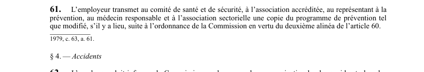

art-61-LSST : diffusion programme prévention modifié
Un article du wiki ⚖️ Recueil législatif
En bref
L'employeur transmet au comité de santé et de sécurité, à l'association accréditée, au représentant à la prévention. Cette obligation vise l'employeur.
🌐 LegisQuébec · 📄 PDF officiel (page 19)
Texte officiel : capture du PDF

Toucher l'image pour l'agrandir🔗 Ouvrir a cette page : LSST.pdf : page 19 · texte a jour au 26 mars 2024
Voir aussi
- art. 59 : contenu du programme de prévention · obligation : un programme de prévention a pour objectif d'éliminer à la source même les dangers pour la santé, la sécurité et l'intégrité physique et psychique des travailleurs ; il doit notamment contenir des programmes d'adaptation, des mesures de surveillance, des normes d'hygiène.
- art. 60 : transmission modification programme prévention · obligation : l'employeur doit transmettre au comité de santé et de sécurité et à la Commission le programme de prévention et ses mises à jour ; la Commission peut ordonner que le contenu soit modifié ou qu'un nouveau programme lui soit transmis dans le délai qu'elle détermine.
- art. 62 : rapport événement grave Commission · obligation : l'employeur doit informer la Commission par le moyen le plus rapide et, dans les 24 heures, lui faire un rapport écrit de tout événement entraînant le décès d'un travailleur, une perte de membre, des blessures à plusieurs travailleurs ou des dommages matériels de 150 000 $.
- art. 62.1 : étiquetage formation produits dangereux · faculté : sauf dans les cas prévus par règlement, un employeur ne peut permettre l'utilisation, la manutention, le stockage ou l'entreposage d'un produit dangereux sur un lieu de travail à moins qu'il ne soit pourvu d'une étiquette.
- 🔧 Modifié par : LMRSST · Article modificateur de la LMRSST.
- ↑ Loi : LSST
Pages qui pointent ici (10)
- art-146-LMRSST : modifie l'art. 61 LSST Recueil législatif
- art-147-LMRSST : insertion après art. 61 LSST Recueil législatif
- art-59-LSST : contenu du programme de prévention Recueil législatif
- art-60-LSST : transmission modification programme prévention Recueil législatif
- art-62-LSST : rapport événement grave Commission Recueil législatif
- art-62.1-LSST : étiquetage formation produits dangereux Recueil législatif
- LSST : Chapitre IV : Programme de prévention Recueil législatif
- LSST, droits et obligations Droit du travail
- Mise en place programme de prévention Recueil législatif
- Procédures Recueil législatif